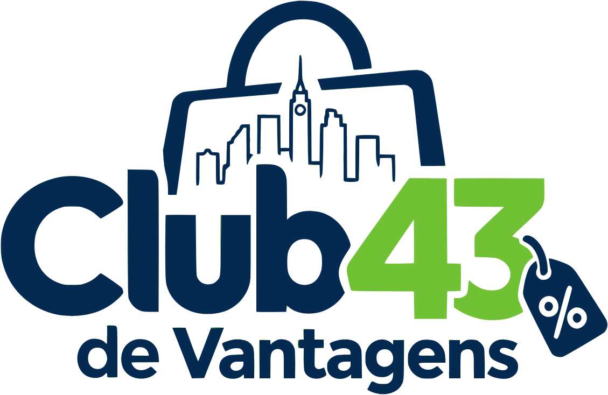

CENTRO DE LONDRINA
ACERVO CORRENTE
40 ESTABELECIMENTOS
40 ESTABELECIMENTOS
Tem
bolsa
no centro.
bolsa
no centro.
ÍND. 07 — 40
23°18′S · 51°09′O

Clube de vantagens
do comércio central
do comércio central
E agora tem desconto.
R$ 99,90 o ano
CLUB43.COM.BR